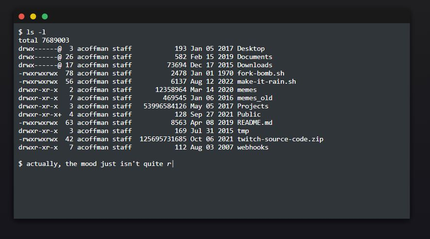
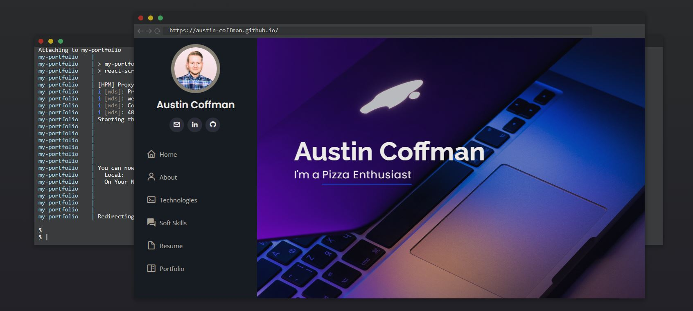

Terminal in CSS.
A fake terminal that types out a little script, makes it rain, and boots up my old portfolio. A small project to get comfortable with CSS keyframe animation. No framework, no build step.

Why.
Most of my work lives behind an API. I wanted an excuse to learn CSS keyframes properly, and a terminal is a good one: a blinking cursor, text appearing at typing speed, windows sliding in. Everything on screen is timing.
How.
It doesn’t take real commands. The whole thing is a script: a list of lines and their fake output, and typed.js types each one into the prompt while jQuery appends the result to the history. It says hello, runs ls -l on a made-up home directory, decides the mood isn’t right, and runs ./make-it-rain.sh.
The rain was the trickiest part. It’s two rows of drops, each drop built from three keyframe animations (the drop falling, the stem, and the splat at the bottom) with staggered delays so it doesn’t look like a pattern. Then make web prints a fake docker-compose and npm log and a browser window slides in with the old portfolio loaded in an iframe.
$ ls -l drwxr-xr-x 2 acoffman staff Jan 05 2017 Desktop -rw-r--r-- 1 acoffman staff Jul 31 2020 webhooks $ ./make-it-rain.sh

make web finishes and the old portfolio opens in a fake browser window.Lessons.
- Keyframe timing and the rotation math for angled rain took longer than everything else combined.
- I would make it interactive. It looks like a terminal, so people try to type into it.
Try it.
It runs itself. Open it and wait for the rain.